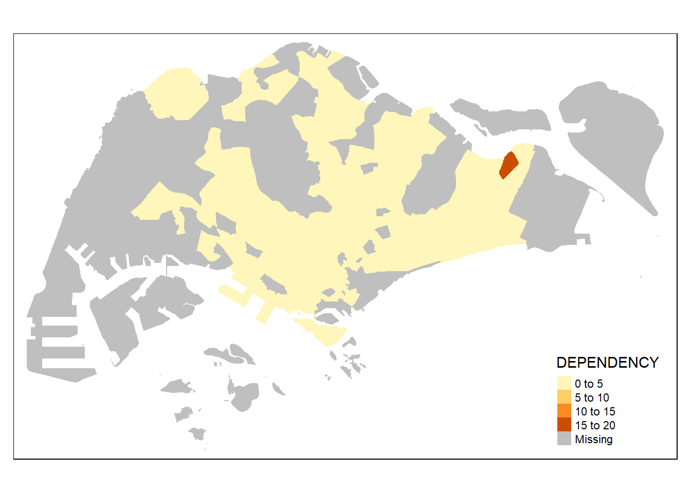
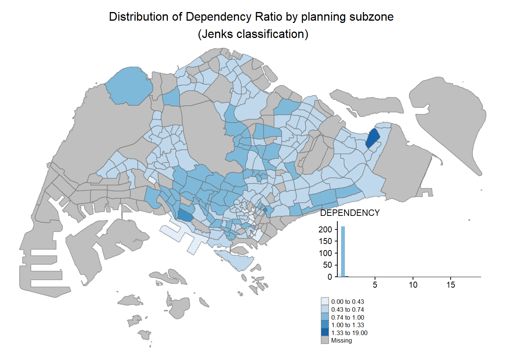
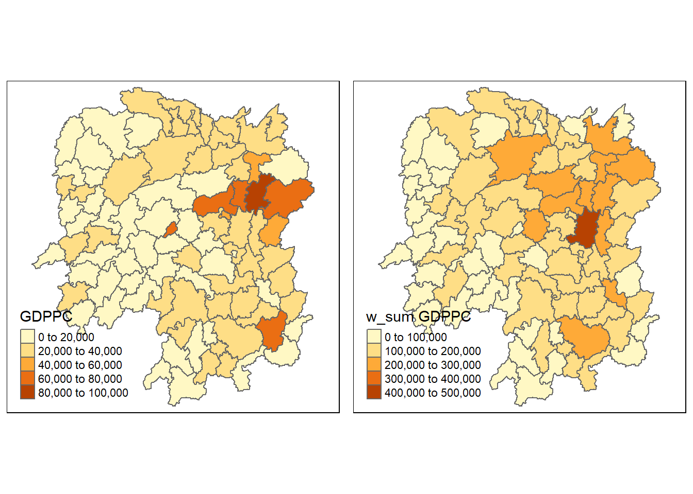

pacman::p_load(sf,tidyverse)Hands-on Exercise 1: Geospatial Data Wrangling with R
Overview
In this hands-on exercise, I learn how to import and wrangling geospatial data using appropriate R packages.
Getting Started
The code chunk below install and load sf and tidyverse packages into R environment.
Importing Geospatial Data
Importing polygon feature data
mpsz <- st_read(dsn = "data/geospatial", layer = "MP14_SUBZONE_WEB_PL")Reading layer `MP14_SUBZONE_WEB_PL' from data source
`C:\Fay1109\ISSS624\Hands-on_Ex1\data\geospatial' using driver `ESRI Shapefile'
Simple feature collection with 323 features and 15 fields
Geometry type: MULTIPOLYGON
Dimension: XY
Bounding box: xmin: 2667.538 ymin: 15748.72 xmax: 56396.44 ymax: 50256.33
Projected CRS: SVY21Importing polyline feature data in shapefile form
cyclingpath = st_read(dsn = "data/geospatial", layer = "CyclingPath")Reading layer `CyclingPath' from data source
`C:\Fay1109\ISSS624\Hands-on_Ex1\data\geospatial' using driver `ESRI Shapefile'
Simple feature collection with 1625 features and 2 fields
Geometry type: LINESTRING
Dimension: XY
Bounding box: xmin: 12711.19 ymin: 28711.33 xmax: 42626.09 ymax: 48948.15
Projected CRS: SVY21Importing GIS data in kml format
preschool = st_read("data/geospatial/pre-schools-location-kml.kml")Reading layer `PRESCHOOLS_LOCATION' from data source
`C:\Fay1109\ISSS624\Hands-on_Ex1\data\geospatial\pre-schools-location-kml.kml'
using driver `KML'
Simple feature collection with 1359 features and 2 fields
Geometry type: POINT
Dimension: XYZ
Bounding box: xmin: 103.6824 ymin: 1.248403 xmax: 103.9897 ymax: 1.462134
z_range: zmin: 0 zmax: 0
Geodetic CRS: WGS 84Checking the Content of A Simple Feature Data Frame
Working with st_geometry()
st_geometry(mpsz)Geometry set for 323 features
Geometry type: MULTIPOLYGON
Dimension: XY
Bounding box: xmin: 2667.538 ymin: 15748.72 xmax: 56396.44 ymax: 50256.33
Projected CRS: SVY21
First 5 geometries:MULTIPOLYGON (((31495.56 30140.01, 31980.96 296...MULTIPOLYGON (((29092.28 30021.89, 29119.64 300...MULTIPOLYGON (((29932.33 29879.12, 29947.32 298...MULTIPOLYGON (((27131.28 30059.73, 27088.33 297...MULTIPOLYGON (((26451.03 30396.46, 26440.47 303...Working with glimpse()
library(dplyr)
glimpse(mpsz)Rows: 323
Columns: 16
$ OBJECTID <int> 1, 2, 3, 4, 5, 6, 7, 8, 9, 10, 11, 12, 13, 14, 15, 16, 17, …
$ SUBZONE_NO <int> 1, 1, 3, 8, 3, 7, 9, 2, 13, 7, 12, 6, 1, 5, 1, 1, 3, 2, 2, …
$ SUBZONE_N <chr> "MARINA SOUTH", "PEARL'S HILL", "BOAT QUAY", "HENDERSON HIL…
$ SUBZONE_C <chr> "MSSZ01", "OTSZ01", "SRSZ03", "BMSZ08", "BMSZ03", "BMSZ07",…
$ CA_IND <chr> "Y", "Y", "Y", "N", "N", "N", "N", "Y", "N", "N", "N", "N",…
$ PLN_AREA_N <chr> "MARINA SOUTH", "OUTRAM", "SINGAPORE RIVER", "BUKIT MERAH",…
$ PLN_AREA_C <chr> "MS", "OT", "SR", "BM", "BM", "BM", "BM", "SR", "QT", "QT",…
$ REGION_N <chr> "CENTRAL REGION", "CENTRAL REGION", "CENTRAL REGION", "CENT…
$ REGION_C <chr> "CR", "CR", "CR", "CR", "CR", "CR", "CR", "CR", "CR", "CR",…
$ INC_CRC <chr> "5ED7EB253F99252E", "8C7149B9EB32EEFC", "C35FEFF02B13E0E5",…
$ FMEL_UPD_D <date> 2014-12-05, 2014-12-05, 2014-12-05, 2014-12-05, 2014-12-05…
$ X_ADDR <dbl> 31595.84, 28679.06, 29654.96, 26782.83, 26201.96, 25358.82,…
$ Y_ADDR <dbl> 29220.19, 29782.05, 29974.66, 29933.77, 30005.70, 29991.38,…
$ SHAPE_Leng <dbl> 5267.381, 3506.107, 1740.926, 3313.625, 2825.594, 4428.913,…
$ SHAPE_Area <dbl> 1630379.27, 559816.25, 160807.50, 595428.89, 387429.44, 103…
$ geometry <MULTIPOLYGON [m]> MULTIPOLYGON (((31495.56 30..., MULTIPOLYGON (…Working with head()
head(mpsz, n=5) Simple feature collection with 5 features and 15 fields
Geometry type: MULTIPOLYGON
Dimension: XY
Bounding box: xmin: 25867.68 ymin: 28369.47 xmax: 32362.39 ymax: 30435.54
Projected CRS: SVY21
OBJECTID SUBZONE_NO SUBZONE_N SUBZONE_C CA_IND PLN_AREA_N
1 1 1 MARINA SOUTH MSSZ01 Y MARINA SOUTH
2 2 1 PEARL'S HILL OTSZ01 Y OUTRAM
3 3 3 BOAT QUAY SRSZ03 Y SINGAPORE RIVER
4 4 8 HENDERSON HILL BMSZ08 N BUKIT MERAH
5 5 3 REDHILL BMSZ03 N BUKIT MERAH
PLN_AREA_C REGION_N REGION_C INC_CRC FMEL_UPD_D X_ADDR
1 MS CENTRAL REGION CR 5ED7EB253F99252E 2014-12-05 31595.84
2 OT CENTRAL REGION CR 8C7149B9EB32EEFC 2014-12-05 28679.06
3 SR CENTRAL REGION CR C35FEFF02B13E0E5 2014-12-05 29654.96
4 BM CENTRAL REGION CR 3775D82C5DDBEFBD 2014-12-05 26782.83
5 BM CENTRAL REGION CR 85D9ABEF0A40678F 2014-12-05 26201.96
Y_ADDR SHAPE_Leng SHAPE_Area geometry
1 29220.19 5267.381 1630379.3 MULTIPOLYGON (((31495.56 30...
2 29782.05 3506.107 559816.2 MULTIPOLYGON (((29092.28 30...
3 29974.66 1740.926 160807.5 MULTIPOLYGON (((29932.33 29...
4 29933.77 3313.625 595428.9 MULTIPOLYGON (((27131.28 30...
5 30005.70 2825.594 387429.4 MULTIPOLYGON (((26451.03 30...Plotting the Geospatial Data
plot(mpsz)Warning: plotting the first 9 out of 15 attributes; use max.plot = 15 to plot
all
plot(st_geometry(mpsz))
plot(mpsz["PLN_AREA_N"])
Working with Projection
Assigning EPSG code to a simple feature data frame
st_crs(mpsz)Coordinate Reference System:
User input: SVY21
wkt:
PROJCRS["SVY21",
BASEGEOGCRS["SVY21[WGS84]",
DATUM["World Geodetic System 1984",
ELLIPSOID["WGS 84",6378137,298.257223563,
LENGTHUNIT["metre",1]],
ID["EPSG",6326]],
PRIMEM["Greenwich",0,
ANGLEUNIT["Degree",0.0174532925199433]]],
CONVERSION["unnamed",
METHOD["Transverse Mercator",
ID["EPSG",9807]],
PARAMETER["Latitude of natural origin",1.36666666666667,
ANGLEUNIT["Degree",0.0174532925199433],
ID["EPSG",8801]],
PARAMETER["Longitude of natural origin",103.833333333333,
ANGLEUNIT["Degree",0.0174532925199433],
ID["EPSG",8802]],
PARAMETER["Scale factor at natural origin",1,
SCALEUNIT["unity",1],
ID["EPSG",8805]],
PARAMETER["False easting",28001.642,
LENGTHUNIT["metre",1],
ID["EPSG",8806]],
PARAMETER["False northing",38744.572,
LENGTHUNIT["metre",1],
ID["EPSG",8807]]],
CS[Cartesian,2],
AXIS["(E)",east,
ORDER[1],
LENGTHUNIT["metre",1,
ID["EPSG",9001]]],
AXIS["(N)",north,
ORDER[2],
LENGTHUNIT["metre",1,
ID["EPSG",9001]]]]mpsz3414 <- st_set_crs(mpsz, 3414)Warning: st_crs<- : replacing crs does not reproject data; use st_transform for
thatst_crs(mpsz3414)Coordinate Reference System:
User input: EPSG:3414
wkt:
PROJCRS["SVY21 / Singapore TM",
BASEGEOGCRS["SVY21",
DATUM["SVY21",
ELLIPSOID["WGS 84",6378137,298.257223563,
LENGTHUNIT["metre",1]]],
PRIMEM["Greenwich",0,
ANGLEUNIT["degree",0.0174532925199433]],
ID["EPSG",4757]],
CONVERSION["Singapore Transverse Mercator",
METHOD["Transverse Mercator",
ID["EPSG",9807]],
PARAMETER["Latitude of natural origin",1.36666666666667,
ANGLEUNIT["degree",0.0174532925199433],
ID["EPSG",8801]],
PARAMETER["Longitude of natural origin",103.833333333333,
ANGLEUNIT["degree",0.0174532925199433],
ID["EPSG",8802]],
PARAMETER["Scale factor at natural origin",1,
SCALEUNIT["unity",1],
ID["EPSG",8805]],
PARAMETER["False easting",28001.642,
LENGTHUNIT["metre",1],
ID["EPSG",8806]],
PARAMETER["False northing",38744.572,
LENGTHUNIT["metre",1],
ID["EPSG",8807]]],
CS[Cartesian,2],
AXIS["northing (N)",north,
ORDER[1],
LENGTHUNIT["metre",1]],
AXIS["easting (E)",east,
ORDER[2],
LENGTHUNIT["metre",1]],
USAGE[
SCOPE["Cadastre, engineering survey, topographic mapping."],
AREA["Singapore - onshore and offshore."],
BBOX[1.13,103.59,1.47,104.07]],
ID["EPSG",3414]]Transforming the projection of preschool from wgs84 to svy21.
preschool3414 <- st_transform(preschool, crs = 3414)Importing and Converting An Aspatial Data
Importing the aspatial data
library(readr)
listings <- read_csv("data/aspatial/listings.csv")Rows: 4252 Columns: 16
── Column specification ────────────────────────────────────────────────────────
Delimiter: ","
chr (5): name, host_name, neighbourhood_group, neighbourhood, room_type
dbl (10): id, host_id, latitude, longitude, price, minimum_nights, number_o...
date (1): last_review
ℹ Use `spec()` to retrieve the full column specification for this data.
ℹ Specify the column types or set `show_col_types = FALSE` to quiet this message.list(listings) [[1]]
# A tibble: 4,252 × 16
id name host_id host_…¹ neigh…² neigh…³ latit…⁴ longi…⁵ room_…⁶ price
<dbl> <chr> <dbl> <chr> <chr> <chr> <dbl> <dbl> <chr> <dbl>
1 50646 Pleasan… 227796 Sujatha Centra… Bukit … 1.33 104. Privat… 80
2 71609 Ensuite… 367042 Belinda East R… Tampin… 1.35 104. Privat… 178
3 71896 B&B Ro… 367042 Belinda East R… Tampin… 1.35 104. Privat… 81
4 71903 Room 2-… 367042 Belinda East R… Tampin… 1.35 104. Privat… 81
5 275343 Conveni… 1439258 Joyce Centra… Bukit … 1.29 104. Privat… 52
6 275344 15 mins… 1439258 Joyce Centra… Bukit … 1.29 104. Privat… 40
7 294281 5 mins … 1521514 Elizab… Centra… Newton 1.31 104. Privat… 72
8 301247 Nice ro… 1552002 Rahul Centra… Geylang 1.32 104. Privat… 41
9 324945 20 Mins… 1439258 Joyce Centra… Bukit … 1.29 104. Privat… 49
10 330089 Accomo@… 1439258 Joyce Centra… Bukit … 1.29 104. Privat… 49
# … with 4,242 more rows, 6 more variables: minimum_nights <dbl>,
# number_of_reviews <dbl>, last_review <date>, reviews_per_month <dbl>,
# calculated_host_listings_count <dbl>, availability_365 <dbl>, and
# abbreviated variable names ¹host_name, ²neighbourhood_group,
# ³neighbourhood, ⁴latitude, ⁵longitude, ⁶room_typeCreating a simple feature data frame from an aspatial data frame
listings_sf <- st_as_sf(listings,
coords = c("longitude", "latitude"),
crs=4326) %>%
st_transform(crs = 3414)glimpse(listings_sf)Rows: 4,252
Columns: 15
$ id <dbl> 50646, 71609, 71896, 71903, 275343, 275…
$ name <chr> "Pleasant Room along Bukit Timah", "Ens…
$ host_id <dbl> 227796, 367042, 367042, 367042, 1439258…
$ host_name <chr> "Sujatha", "Belinda", "Belinda", "Belin…
$ neighbourhood_group <chr> "Central Region", "East Region", "East …
$ neighbourhood <chr> "Bukit Timah", "Tampines", "Tampines", …
$ room_type <chr> "Private room", "Private room", "Privat…
$ price <dbl> 80, 178, 81, 81, 52, 40, 72, 41, 49, 49…
$ minimum_nights <dbl> 90, 90, 90, 90, 14, 14, 90, 8, 14, 14, …
$ number_of_reviews <dbl> 18, 20, 24, 48, 20, 13, 133, 105, 14, 1…
$ last_review <date> 2014-07-08, 2019-12-28, 2014-12-10, 20…
$ reviews_per_month <dbl> 0.22, 0.28, 0.33, 0.67, 0.20, 0.16, 1.2…
$ calculated_host_listings_count <dbl> 1, 4, 4, 4, 50, 50, 7, 1, 50, 50, 50, 4…
$ availability_365 <dbl> 365, 365, 365, 365, 353, 364, 365, 90, …
$ geometry <POINT [m]> POINT (22646.02 35167.9), POINT (…Geoprocessing with sf package
Buffering
buffer_cycling <- st_buffer(cyclingpath,
dist=5, nQuadSegs = 30)buffer_cycling$AREA <- st_area(buffer_cycling)sum(buffer_cycling$AREA)773143.9 [m^2]Point-in-polygon count
mpsz3414$`PreSch Count`<- lengths(st_intersects(mpsz3414, preschool3414))summary(mpsz3414$`PreSch Count`) Min. 1st Qu. Median Mean 3rd Qu. Max.
0.000 0.000 2.000 4.207 6.000 37.000 top_n(mpsz3414, 1, `PreSch Count`)Simple feature collection with 1 feature and 16 fields
Geometry type: MULTIPOLYGON
Dimension: XY
Bounding box: xmin: 23449.05 ymin: 46001.23 xmax: 25594.22 ymax: 47996.47
Projected CRS: SVY21 / Singapore TM
OBJECTID SUBZONE_NO SUBZONE_N SUBZONE_C CA_IND PLN_AREA_N PLN_AREA_C
1 290 3 WOODLANDS EAST WDSZ03 N WOODLANDS WD
REGION_N REGION_C INC_CRC FMEL_UPD_D X_ADDR Y_ADDR
1 NORTH REGION NR C90769E43EE6B0F2 2014-12-05 24506.64 46991.63
SHAPE_Leng SHAPE_Area geometry PreSch Count
1 6603.608 2553464 MULTIPOLYGON (((24786.75 46... 37mpsz3414$Area <- mpsz3414 %>%
st_area()mpsz3414 <- mpsz3414 %>%
mutate(`PreSch Density` = `PreSch Count`/Area * 1000000)Explorotary Data Analysis (EDA)
hist(mpsz3414$`PreSch Density`)
library(ggplot2)
ggplot(data=mpsz3414,
aes(x= as.numeric(`PreSch Density`)))+
geom_histogram(bins=20,
color="black",
fill="light blue") +
labs(title = "Are pre-school even distributed in Singapore?",
subtitle= "There are many planning sub-zones with a single pre-school, on the other hand, \nthere are two planning sub-zones with at least 20 pre-schools",
x = "Pre-school density (per km sq)",
y = "Frequency")
ggplot(data=mpsz3414,
aes(x= as.numeric(`PreSch Density`), y= as.numeric(`PreSch Count`)))+
geom_point() +
labs(title = "Are pre-school even distributed in Singapore?",
subtitle= "There are many planning sub-zones with a single pre-school, on the other hand, \nthere are two planning sub-zones with at least 20 pre-schools",
x = "Pre-school density (per km sq)",
y = "Pre-school Count")Choropleth Mapping with R
Overview
In this chapter, I will learn how to plot functional and truthful choropleth maps by using an R package called **tmap** package.
Survival Tip
It is advisable for you to read the functional description of each function before using them.
Getting Started
In this hands-on exercise, the key R package use is tmap package in R. Beside tmap package, four other R packages will be used. They are:
readr for importing delimited text file,
tidyr for tidying data,
dplyr for wrangling data and
sf for handling geospatial data.
The code chunk below will be used to install and load these packages in RStudio.
pacman::p_load(sf, tmap, tidyverse)Importing Data into R
The Data
Importing Geospatial Data into R
mpsz <- st_read(dsn = "data/geospatial",
layer = "MP14_SUBZONE_WEB_PL")Reading layer `MP14_SUBZONE_WEB_PL' from data source
`C:\Fay1109\ISSS624\Hands-on_Ex1\data\geospatial' using driver `ESRI Shapefile'
Simple feature collection with 323 features and 15 fields
Geometry type: MULTIPOLYGON
Dimension: XY
Bounding box: xmin: 2667.538 ymin: 15748.72 xmax: 56396.44 ymax: 50256.33
Projected CRS: SVY21mpszSimple feature collection with 323 features and 15 fields
Geometry type: MULTIPOLYGON
Dimension: XY
Bounding box: xmin: 2667.538 ymin: 15748.72 xmax: 56396.44 ymax: 50256.33
Projected CRS: SVY21
First 10 features:
OBJECTID SUBZONE_NO SUBZONE_N SUBZONE_C CA_IND PLN_AREA_N
1 1 1 MARINA SOUTH MSSZ01 Y MARINA SOUTH
2 2 1 PEARL'S HILL OTSZ01 Y OUTRAM
3 3 3 BOAT QUAY SRSZ03 Y SINGAPORE RIVER
4 4 8 HENDERSON HILL BMSZ08 N BUKIT MERAH
5 5 3 REDHILL BMSZ03 N BUKIT MERAH
6 6 7 ALEXANDRA HILL BMSZ07 N BUKIT MERAH
7 7 9 BUKIT HO SWEE BMSZ09 N BUKIT MERAH
8 8 2 CLARKE QUAY SRSZ02 Y SINGAPORE RIVER
9 9 13 PASIR PANJANG 1 QTSZ13 N QUEENSTOWN
10 10 7 QUEENSWAY QTSZ07 N QUEENSTOWN
PLN_AREA_C REGION_N REGION_C INC_CRC FMEL_UPD_D X_ADDR
1 MS CENTRAL REGION CR 5ED7EB253F99252E 2014-12-05 31595.84
2 OT CENTRAL REGION CR 8C7149B9EB32EEFC 2014-12-05 28679.06
3 SR CENTRAL REGION CR C35FEFF02B13E0E5 2014-12-05 29654.96
4 BM CENTRAL REGION CR 3775D82C5DDBEFBD 2014-12-05 26782.83
5 BM CENTRAL REGION CR 85D9ABEF0A40678F 2014-12-05 26201.96
6 BM CENTRAL REGION CR 9D286521EF5E3B59 2014-12-05 25358.82
7 BM CENTRAL REGION CR 7839A8577144EFE2 2014-12-05 27680.06
8 SR CENTRAL REGION CR 48661DC0FBA09F7A 2014-12-05 29253.21
9 QT CENTRAL REGION CR 1F721290C421BFAB 2014-12-05 22077.34
10 QT CENTRAL REGION CR 3580D2AFFBEE914C 2014-12-05 24168.31
Y_ADDR SHAPE_Leng SHAPE_Area geometry
1 29220.19 5267.381 1630379.3 MULTIPOLYGON (((31495.56 30...
2 29782.05 3506.107 559816.2 MULTIPOLYGON (((29092.28 30...
3 29974.66 1740.926 160807.5 MULTIPOLYGON (((29932.33 29...
4 29933.77 3313.625 595428.9 MULTIPOLYGON (((27131.28 30...
5 30005.70 2825.594 387429.4 MULTIPOLYGON (((26451.03 30...
6 29991.38 4428.913 1030378.8 MULTIPOLYGON (((25899.7 297...
7 30230.86 3275.312 551732.0 MULTIPOLYGON (((27746.95 30...
8 30222.86 2208.619 290184.7 MULTIPOLYGON (((29351.26 29...
9 29893.78 6571.323 1084792.3 MULTIPOLYGON (((20996.49 30...
10 30104.18 3454.239 631644.3 MULTIPOLYGON (((24472.11 29...Importing Attribute Data into R
popdata <- read_csv("data/aspatial/respopagesextod2011to2020.csv")Rows: 984656 Columns: 7
── Column specification ────────────────────────────────────────────────────────
Delimiter: ","
chr (5): PA, SZ, AG, Sex, TOD
dbl (2): Pop, Time
ℹ Use `spec()` to retrieve the full column specification for this data.
ℹ Specify the column types or set `show_col_types = FALSE` to quiet this message.Data Preparation
Data wrangling
popdata2020 <- popdata %>%
filter(Time == 2020) %>%
group_by(PA, SZ, AG) %>%
summarise(`POP` = sum(`Pop`)) %>%
ungroup()%>%
pivot_wider(names_from=AG,
values_from=POP) %>%
mutate(YOUNG = rowSums(.[3:6])
+rowSums(.[12])) %>%
mutate(`ECONOMY ACTIVE` = rowSums(.[7:11])+
rowSums(.[13:15]))%>%
mutate(`AGED`=rowSums(.[16:21])) %>%
mutate(`TOTAL`=rowSums(.[3:21])) %>%
mutate(`DEPENDENCY` = (`YOUNG` + `AGED`)
/`ECONOMY ACTIVE`) %>%
select(`PA`, `SZ`, `YOUNG`,
`ECONOMY ACTIVE`, `AGED`,
`TOTAL`, `DEPENDENCY`)`summarise()` has grouped output by 'PA', 'SZ'. You can override using the
`.groups` argument.Joining the attribute data and geospatial data
popdata2020 <- popdata2020 %>%
mutate_at(.vars = vars(PA, SZ),
.funs = funs(toupper)) %>%
filter(`ECONOMY ACTIVE` > 0)Warning: `funs()` was deprecated in dplyr 0.8.0.
ℹ Please use a list of either functions or lambdas:
# Simple named list: list(mean = mean, median = median)
# Auto named with `tibble::lst()`: tibble::lst(mean, median)
# Using lambdas list(~ mean(., trim = .2), ~ median(., na.rm = TRUE))mpsz_pop2020 <- left_join(mpsz, popdata2020,
by = c("SUBZONE_N" = "SZ"))write_rds(mpsz_pop2020, "data/rds/mpszpop2020.rds")Choropleth Mapping Geospatial Data Using tmap
Plotting a choropleth map quickly by using qtm()
tmap_mode("plot")tmap mode set to plottingqtm(mpsz_pop2020,
fill = "DEPENDENCY")
Creating a choropleth map by using tmap’s elements
tm_shape(mpsz_pop2020)+
tm_fill("DEPENDENCY",
style = "quantile",
palette = "Blues",
title = "Dependency ratio") +
tm_layout(main.title = "Distribution of Dependency Ratio by planning subzone",
main.title.position = "center",
main.title.size = 1.2,
legend.height = 0.45,
legend.width = 0.35,
frame = TRUE) +
tm_borders(alpha = 0.5) +
tm_compass(type="8star", size = 2) +
tm_scale_bar() +
tm_grid(alpha =0.2) +
tm_credits("Source: Planning Sub-zone boundary from Urban Redevelopment Authorithy (URA)\n and Population data from Department of Statistics DOS",
position = c("left", "bottom"))
Drawing a base map
tm_shape(mpsz_pop2020) +
tm_polygons()
Drawing a choropleth map using tm_polygons()
tm_shape(mpsz_pop2020)+
tm_polygons("DEPENDENCY")
Drawing a choropleth map using tm_fill() and *tm_border()**
tm_shape(mpsz_pop2020)+
tm_fill("DEPENDENCY")
tm_shape(mpsz_pop2020)+
tm_fill("DEPENDENCY") +
tm_borders(lwd = 0.1, alpha = 1)
Data classification methods of tmap
Plotting choropleth maps with built-in classification methods
tm_shape(mpsz_pop2020)+
tm_fill("DEPENDENCY",
n = 5,
style = "jenks") +
tm_borders(alpha = 0.5)
tm_shape(mpsz_pop2020)+
tm_fill("DEPENDENCY",
n = 5,
style = "equal") +
tm_borders(alpha = 0.5)
Plotting choropleth map with custome break
summary(mpsz_pop2020$DEPENDENCY) Min. 1st Qu. Median Mean 3rd Qu. Max. NA's
0.0000 0.6519 0.7025 0.7742 0.7645 19.0000 92 tm_shape(mpsz_pop2020)+
tm_fill("DEPENDENCY",
breaks = c(0, 0.60, 0.70, 0.80, 0.90, 1.00)) +
tm_borders(alpha = 0.5)Warning: Values have found that are higher than the highest breakColour Scheme
Using ColourBrewer palette
tm_shape(mpsz_pop2020)+
tm_fill("DEPENDENCY",
n = 6,
style = "quantile",
palette = "Blues") +
tm_borders(alpha = 0.5)
tm_shape(mpsz_pop2020)+
tm_fill("DEPENDENCY",
style = "quantile",
palette = "-Greens") +
tm_borders(alpha = 0.5)
Map Layouts
Map Legend
tm_shape(mpsz_pop2020)+
tm_fill("DEPENDENCY",
style = "jenks",
palette = "Blues",
legend.hist = TRUE,
legend.is.portrait = TRUE,
legend.hist.z = 0.1) +
tm_layout(main.title = "Distribution of Dependency Ratio by planning subzone \n(Jenks classification)",
main.title.position = "center",
main.title.size = 1,
legend.height = 0.45,
legend.width = 0.35,
legend.outside = FALSE,
legend.position = c("right", "bottom"),
frame = FALSE) +
tm_borders(alpha = 0.5)
Map style
tm_shape(mpsz_pop2020)+
tm_fill("DEPENDENCY",
style = "quantile",
palette = "-Greens") +
tm_borders(alpha = 0.5) +
tmap_style("classic")tmap style set to "classic"other available styles are: "white", "gray", "natural", "cobalt", "col_blind", "albatross", "beaver", "bw", "watercolor" 
Cartographic Furniture
tm_shape(mpsz_pop2020)+
tm_fill("DEPENDENCY",
style = "quantile",
palette = "Blues",
title = "No. of persons") +
tm_layout(main.title = "Distribution of Dependency Ratio \nby planning subzone",
main.title.position = "center",
main.title.size = 1.2,
legend.height = 0.45,
legend.width = 0.35,
frame = TRUE) +
tm_borders(alpha = 0.5) +
tm_compass(type="8star", size = 2) +
tm_scale_bar(width = 0.15) +
tm_grid(lwd = 0.1, alpha = 0.2) +
tm_credits("Source: Planning Sub-zone boundary from Urban Redevelopment Authorithy (URA)\n and Population data from Department of Statistics DOS",
position = c("left", "bottom"))
tmap_style("white")tmap style set to "white"other available styles are: "gray", "natural", "cobalt", "col_blind", "albatross", "beaver", "bw", "classic", "watercolor" Drawing Small Multiple Choropleth Maps
By assigning multiple values to at least one of the aesthetic arguments
tm_shape(mpsz_pop2020)+
tm_fill(c("YOUNG", "AGED"),
style = "equal",
palette = "Blues") +
tm_layout(legend.position = c("right", "bottom")) +
tm_borders(alpha = 0.5) +
tmap_style("white")tmap style set to "white"other available styles are: "gray", "natural", "cobalt", "col_blind", "albatross", "beaver", "bw", "classic", "watercolor" 
tm_shape(mpsz_pop2020)+
tm_polygons(c("DEPENDENCY","AGED"),
style = c("equal", "quantile"),
palette = list("Blues","Greens")) +
tm_layout(legend.position = c("right", "bottom"))
By defining a group-by variable in tm_facets()
tm_shape(mpsz_pop2020) +
tm_fill("DEPENDENCY",
style = "quantile",
palette = "Blues",
thres.poly = 0) +
tm_facets(by="REGION_N",
free.coords=TRUE,
drop.shapes=TRUE) +
tm_layout(legend.show = FALSE,
title.position = c("center", "center"),
title.size = 20) +
tm_borders(alpha = 0.5)Warning: The argument drop.shapes has been renamed to drop.units, and is
therefore deprecated
By creating multiple stand-alone maps with tmap_arrange()
youngmap <- tm_shape(mpsz_pop2020)+
tm_polygons("YOUNG",
style = "quantile",
palette = "Blues")
agedmap <- tm_shape(mpsz_pop2020)+
tm_polygons("AGED",
style = "quantile",
palette = "Blues")
tmap_arrange(youngmap, agedmap, asp=1, ncol=2)
Mappping Spatial Object Meeting a Selection Criterion
tm_shape(mpsz_pop2020[mpsz_pop2020$REGION_N=="CENTRAL REGION", ])+
tm_fill("DEPENDENCY",
style = "quantile",
palette = "Blues",
legend.hist = TRUE,
legend.is.portrait = TRUE,
legend.hist.z = 0.1) +
tm_layout(legend.outside = TRUE,
legend.height = 0.45,
legend.width = 5.0,
legend.position = c("right", "bottom"),
frame = FALSE) +
tm_borders(alpha = 0.5)Warning in pre_process_gt(x, interactive = interactive, orig_crs =
gm$shape.orig_crs): legend.width controls the width of the legend within a map.
Please use legend.outside.size to control the width of the outside legend
Reference
All about tmap package
Geospatial data wrangling
Data wrangling
Spatial Weights and Applications
Overview
The Study Area and Data
Two data sets will be used in this hands-on exercise, they are:
Hunan county boundary layer. This is a geospatial data set in ESRI shapefile format.
Hunan_2012.csv: This csv file contains selected Hunan’s local development indicators in 2012.
Getting Started
Before we get started, we need to ensure that spdep, sf, tmap and tidyverse packages of R are currently installed in your R.
pacman::p_load(sf, spdep, tmap, tidyverse)Getting the Data Into R Environment
In this section, you will learn how to bring a geospatial data and its associated attribute table into R environment. The geospatial data is in ESRI shapefile format and the attribute table is in csv fomat.
Import shapefile into r environment
The code chunk below uses st_read() of sf package to import Hunan shapefile into R. The imported shapefile will be simple features Object of sf.
hunan <- st_read(dsn = "data/geospatial",
layer = "Hunan")Reading layer `Hunan' from data source
`C:\Fay1109\ISSS624\Hands-on_Ex1\data\geospatial' using driver `ESRI Shapefile'
Simple feature collection with 88 features and 7 fields
Geometry type: POLYGON
Dimension: XY
Bounding box: xmin: 108.7831 ymin: 24.6342 xmax: 114.2544 ymax: 30.12812
Geodetic CRS: WGS 84Import csv file into r environment
Next, we will import Hunan_2012.csv into R by using read_csv() of readr package. The output is R dataframe class.hunan2012 <- read_csv("data/aspatial/Hunan_2012.csv")Rows: 88 Columns: 29
── Column specification ────────────────────────────────────────────────────────
Delimiter: ","
chr (2): County, City
dbl (27): avg_wage, deposite, FAI, Gov_Rev, Gov_Exp, GDP, GDPPC, GIO, Loan, ...
ℹ Use `spec()` to retrieve the full column specification for this data.
ℹ Specify the column types or set `show_col_types = FALSE` to quiet this message.Performing relational join
The code chunk below will be used to update the attribute table of hunan’s SpatialPolygonsDataFrame with the attribute fields of hunan2012 dataframe. This is performed by using left_join() of dplyr package.hunan <- left_join(hunan,hunan2012)Joining, by = "County"Visualising Regional Development Indicator
Now, we are going to prepare a basemap and a choropleth map showing the distribution of GDPPC 2012 by using qtm() of tmap package.basemap <- tm_shape(hunan) +
tm_polygons() +
tm_text("NAME_3", size=0.5)
gdppc <- qtm(hunan, "GDPPC")
tmap_arrange(basemap, gdppc, asp=1, ncol=2)
Computing Contiguity Spatial Weights
In this section, you will learn how to use poly2nb() of spdep package to compute contiguity weight matrices for the study area. This function builds a neighbours list based on regions with contiguous boundaries. If you look at the documentation you will see that you can pass a “queen” argument that takes TRUE or FALSE as options. If you do not specify this argument the default is set to TRUE, that is, if you don’t specify queen = FALSE this function will return a list of first order neighbours using the Queen criteria.
Computing (QUEEN) contiguity based neighbours
The code chunk below is used to compute Queen contiguity weight matrix.wm_q <- poly2nb(hunan, queen=TRUE)
summary(wm_q)Neighbour list object:
Number of regions: 88
Number of nonzero links: 448
Percentage nonzero weights: 5.785124
Average number of links: 5.090909
Link number distribution:
1 2 3 4 5 6 7 8 9 11
2 2 12 16 24 14 11 4 2 1
2 least connected regions:
30 65 with 1 link
1 most connected region:
85 with 11 linksThe summary report above shows that there are 88 area units in Hunan. The most connected area unit has 11 neighbours. There are two area units with only one heighbours.
For each polygon in our polygon object, wm_q lists all neighboring polygons. For example, to see the neighbors for the first polygon in the object, type:wm_q[[1]][1] 2 3 4 57 85hunan$County[1][1] "Anxiang"hunan$NAME_3[c(2,3,4,57,85)][1] "Hanshou" "Jinshi" "Li" "Nan" "Taoyuan"nb1 <- wm_q[[1]]
nb1 <- hunan$GDPPC[nb1]
nb1[1] 20981 34592 24473 21311 22879str(wm_q)List of 88
$ : int [1:5] 2 3 4 57 85
$ : int [1:5] 1 57 58 78 85
$ : int [1:4] 1 4 5 85
$ : int [1:4] 1 3 5 6
$ : int [1:4] 3 4 6 85
$ : int [1:5] 4 5 69 75 85
$ : int [1:4] 67 71 74 84
$ : int [1:7] 9 46 47 56 78 80 86
$ : int [1:6] 8 66 68 78 84 86
$ : int [1:8] 16 17 19 20 22 70 72 73
$ : int [1:3] 14 17 72
$ : int [1:5] 13 60 61 63 83
$ : int [1:4] 12 15 60 83
$ : int [1:3] 11 15 17
$ : int [1:4] 13 14 17 83
$ : int [1:5] 10 17 22 72 83
$ : int [1:7] 10 11 14 15 16 72 83
$ : int [1:5] 20 22 23 77 83
$ : int [1:6] 10 20 21 73 74 86
$ : int [1:7] 10 18 19 21 22 23 82
$ : int [1:5] 19 20 35 82 86
$ : int [1:5] 10 16 18 20 83
$ : int [1:7] 18 20 38 41 77 79 82
$ : int [1:5] 25 28 31 32 54
$ : int [1:5] 24 28 31 33 81
$ : int [1:4] 27 33 42 81
$ : int [1:3] 26 29 42
$ : int [1:5] 24 25 33 49 54
$ : int [1:3] 27 37 42
$ : int 33
$ : int [1:8] 24 25 32 36 39 40 56 81
$ : int [1:8] 24 31 50 54 55 56 75 85
$ : int [1:5] 25 26 28 30 81
$ : int [1:3] 36 45 80
$ : int [1:6] 21 41 47 80 82 86
$ : int [1:6] 31 34 40 45 56 80
$ : int [1:4] 29 42 43 44
$ : int [1:4] 23 44 77 79
$ : int [1:5] 31 40 42 43 81
$ : int [1:6] 31 36 39 43 45 79
$ : int [1:6] 23 35 45 79 80 82
$ : int [1:7] 26 27 29 37 39 43 81
$ : int [1:6] 37 39 40 42 44 79
$ : int [1:4] 37 38 43 79
$ : int [1:6] 34 36 40 41 79 80
$ : int [1:3] 8 47 86
$ : int [1:5] 8 35 46 80 86
$ : int [1:5] 50 51 52 53 55
$ : int [1:4] 28 51 52 54
$ : int [1:5] 32 48 52 54 55
$ : int [1:3] 48 49 52
$ : int [1:5] 48 49 50 51 54
$ : int [1:3] 48 55 75
$ : int [1:6] 24 28 32 49 50 52
$ : int [1:5] 32 48 50 53 75
$ : int [1:7] 8 31 32 36 78 80 85
$ : int [1:6] 1 2 58 64 76 85
$ : int [1:5] 2 57 68 76 78
$ : int [1:4] 60 61 87 88
$ : int [1:4] 12 13 59 61
$ : int [1:7] 12 59 60 62 63 77 87
$ : int [1:3] 61 77 87
$ : int [1:4] 12 61 77 83
$ : int [1:2] 57 76
$ : int 76
$ : int [1:5] 9 67 68 76 84
$ : int [1:4] 7 66 76 84
$ : int [1:5] 9 58 66 76 78
$ : int [1:3] 6 75 85
$ : int [1:3] 10 72 73
$ : int [1:3] 7 73 74
$ : int [1:5] 10 11 16 17 70
$ : int [1:5] 10 19 70 71 74
$ : int [1:6] 7 19 71 73 84 86
$ : int [1:6] 6 32 53 55 69 85
$ : int [1:7] 57 58 64 65 66 67 68
$ : int [1:7] 18 23 38 61 62 63 83
$ : int [1:7] 2 8 9 56 58 68 85
$ : int [1:7] 23 38 40 41 43 44 45
$ : int [1:8] 8 34 35 36 41 45 47 56
$ : int [1:6] 25 26 31 33 39 42
$ : int [1:5] 20 21 23 35 41
$ : int [1:9] 12 13 15 16 17 18 22 63 77
$ : int [1:6] 7 9 66 67 74 86
$ : int [1:11] 1 2 3 5 6 32 56 57 69 75 ...
$ : int [1:9] 8 9 19 21 35 46 47 74 84
$ : int [1:4] 59 61 62 88
$ : int [1:2] 59 87
- attr(*, "class")= chr "nb"
- attr(*, "region.id")= chr [1:88] "1" "2" "3" "4" ...
- attr(*, "call")= language poly2nb(pl = hunan, queen = TRUE)
- attr(*, "type")= chr "queen"
- attr(*, "sym")= logi TRUECreating (ROOK) contiguity based neighbours
The code chunk below is used to compute Rook contiguity weight matrix.
wm_r <- poly2nb(hunan, queen=FALSE)
summary(wm_r)Neighbour list object:
Number of regions: 88
Number of nonzero links: 440
Percentage nonzero weights: 5.681818
Average number of links: 5
Link number distribution:
1 2 3 4 5 6 7 8 9 10
2 2 12 20 21 14 11 3 2 1
2 least connected regions:
30 65 with 1 link
1 most connected region:
85 with 10 linksVisualising contiguity weights
A connectivity graph takes a point and displays a line to each neighboring point. We are working with polygons at the moment, so we will need to get points in order to make our connectivity graphs. The most typically method for this will be polygon centroids. We will calculate these in the sf package before moving onto the graphs. Getting Latitude and Longitude of Polygon Centroids
We will need points to associate with each polygon before we can make our connectivity graph. It will be a little more complicated than just running st_centroid on the sf object: us.bound. We need the coordinates in a separate data frame for this to work. To do this we will use a mapping function. The mapping function applies a given function to each element of a vector and returns a vector of the same length. Our input vector will be the geometry column of us.bound. Our function will be st_centroid. We will be using map_dbl variation of map from the purrr package. For more documentation, check out map documentation
To get our longitude values we map the st_centroid function over the geometry column of us.bound and access the longitude value through double bracket notation [[]] and 1. This allows us to get only the longitude, which is the first value in each centroid.
longitude <- map_dbl(hunan$geometry, ~st_centroid(.x)[[1]])We do the same for latitude with one key difference. We access the second value per each centroid with [[2]].
latitude <- map_dbl(hunan$geometry, ~st_centroid(.x)[[2]])Now that we have latitude and longitude, we use cbind to put longitude and latitude into the same object.
coords <- cbind(longitude, latitude)head(coords) longitude latitude
[1,] 112.1531 29.44362
[2,] 112.0372 28.86489
[3,] 111.8917 29.47107
[4,] 111.7031 29.74499
[5,] 111.6138 29.49258
[6,] 111.0341 29.79863Plotting Queen contiguity based neighbours map
plot(hunan$geometry, border="lightgrey")
plot(wm_q, coords, pch = 19, cex = 0.6, add = TRUE, col= "red")
Plotting Rook contiguity based neighbours map
plot(hunan$geometry, border="lightgrey")
plot(wm_r, coords, pch = 19, cex = 0.6, add = TRUE, col = "red")
Plotting both Queen and Rook contiguity based neighbours maps
par(mfrow=c(1,2))
plot(hunan$geometry, border="lightgrey")
plot(wm_q, coords, pch = 19, cex = 0.6, add = TRUE, col= "red", main="Queen Contiguity")
plot(hunan$geometry, border="lightgrey")
plot(wm_r, coords, pch = 19, cex = 0.6, add = TRUE, col = "red", main="Rook Contiguity")
Computing distance based neighbours
In this section, you will learn how to derive distance-based weight matrices by using dnearneigh() of spdep package.
The function identifies neighbours of region points by Euclidean distance with a distance band with lower d1= and upper d2= bounds controlled by the bounds= argument. If unprojected coordinates are used and either specified in the coordinates object x or with x as a two column matrix and longlat=TRUE, great circle distances in km will be calculated assuming the WGS84 reference ellipsoid.
Determine the cut-off distance
Firstly, we need to determine the upper limit for distance band by using the steps below:
Return a matrix with the indices of points belonging to the set of the k nearest neighbours of each other by using knearneigh() of spdep.
Convert the knn object returned by knearneigh() into a neighbours list of class nb with a list of integer vectors containing neighbour region number ids by using knn2nb().
Return the length of neighbour relationship edges by using nbdists() of spdep. The function returns in the units of the coordinates if the coordinates are projected, in km otherwise.
Remove the list structure of the returned object by using unlist().
#coords <- coordinates(hunan)
k1 <- knn2nb(knearneigh(coords))
k1dists <- unlist(nbdists(k1, coords, longlat = TRUE))
summary(k1dists) Min. 1st Qu. Median Mean 3rd Qu. Max.
24.79 32.57 38.01 39.07 44.52 61.79 The summary report shows that the largest first nearest neighbour distance is 61.79 km, so using this as the upper threshold gives certainty that all units will have at least one neighbour.
Computing fixed distance weight matrix
Now, we will compute the distance weight matrix by using dnearneigh() as shown in the code chunk below.
wm_d62 <- dnearneigh(coords, 0, 62, longlat = TRUE)
wm_d62Neighbour list object:
Number of regions: 88
Number of nonzero links: 324
Percentage nonzero weights: 4.183884
Average number of links: 3.681818 Next, we will use str() to display the content of wm_d62 weight matrix.
str(wm_d62)List of 88
$ : int [1:5] 3 4 5 57 64
$ : int [1:4] 57 58 78 85
$ : int [1:4] 1 4 5 57
$ : int [1:3] 1 3 5
$ : int [1:4] 1 3 4 85
$ : int 69
$ : int [1:2] 67 84
$ : int [1:4] 9 46 47 78
$ : int [1:4] 8 46 68 84
$ : int [1:4] 16 22 70 72
$ : int [1:3] 14 17 72
$ : int [1:5] 13 60 61 63 83
$ : int [1:4] 12 15 60 83
$ : int [1:2] 11 17
$ : int 13
$ : int [1:4] 10 17 22 83
$ : int [1:3] 11 14 16
$ : int [1:3] 20 22 63
$ : int [1:5] 20 21 73 74 82
$ : int [1:5] 18 19 21 22 82
$ : int [1:6] 19 20 35 74 82 86
$ : int [1:4] 10 16 18 20
$ : int [1:3] 41 77 82
$ : int [1:4] 25 28 31 54
$ : int [1:4] 24 28 33 81
$ : int [1:4] 27 33 42 81
$ : int [1:2] 26 29
$ : int [1:6] 24 25 33 49 52 54
$ : int [1:2] 27 37
$ : int 33
$ : int [1:2] 24 36
$ : int 50
$ : int [1:5] 25 26 28 30 81
$ : int [1:3] 36 45 80
$ : int [1:6] 21 41 46 47 80 82
$ : int [1:5] 31 34 45 56 80
$ : int [1:2] 29 42
$ : int [1:3] 44 77 79
$ : int [1:4] 40 42 43 81
$ : int [1:3] 39 45 79
$ : int [1:5] 23 35 45 79 82
$ : int [1:5] 26 37 39 43 81
$ : int [1:3] 39 42 44
$ : int [1:2] 38 43
$ : int [1:6] 34 36 40 41 79 80
$ : int [1:5] 8 9 35 47 86
$ : int [1:5] 8 35 46 80 86
$ : int [1:5] 50 51 52 53 55
$ : int [1:4] 28 51 52 54
$ : int [1:6] 32 48 51 52 54 55
$ : int [1:4] 48 49 50 52
$ : int [1:6] 28 48 49 50 51 54
$ : int [1:2] 48 55
$ : int [1:5] 24 28 49 50 52
$ : int [1:4] 48 50 53 75
$ : int 36
$ : int [1:5] 1 2 3 58 64
$ : int [1:5] 2 57 64 66 68
$ : int [1:3] 60 87 88
$ : int [1:4] 12 13 59 61
$ : int [1:5] 12 60 62 63 87
$ : int [1:4] 61 63 77 87
$ : int [1:5] 12 18 61 62 83
$ : int [1:4] 1 57 58 76
$ : int 76
$ : int [1:5] 58 67 68 76 84
$ : int [1:2] 7 66
$ : int [1:4] 9 58 66 84
$ : int [1:2] 6 75
$ : int [1:3] 10 72 73
$ : int [1:2] 73 74
$ : int [1:3] 10 11 70
$ : int [1:4] 19 70 71 74
$ : int [1:5] 19 21 71 73 86
$ : int [1:2] 55 69
$ : int [1:3] 64 65 66
$ : int [1:3] 23 38 62
$ : int [1:2] 2 8
$ : int [1:4] 38 40 41 45
$ : int [1:5] 34 35 36 45 47
$ : int [1:5] 25 26 33 39 42
$ : int [1:6] 19 20 21 23 35 41
$ : int [1:4] 12 13 16 63
$ : int [1:4] 7 9 66 68
$ : int [1:2] 2 5
$ : int [1:4] 21 46 47 74
$ : int [1:4] 59 61 62 88
$ : int [1:2] 59 87
- attr(*, "class")= chr "nb"
- attr(*, "region.id")= chr [1:88] "1" "2" "3" "4" ...
- attr(*, "call")= language dnearneigh(x = coords, d1 = 0, d2 = 62, longlat = TRUE)
- attr(*, "dnn")= num [1:2] 0 62
- attr(*, "bounds")= chr [1:2] "GE" "LE"
- attr(*, "nbtype")= chr "distance"
- attr(*, "sym")= logi TRUEtable(hunan$County, card(wm_d62))
1 2 3 4 5 6
Anhua 1 0 0 0 0 0
Anren 0 0 0 1 0 0
Anxiang 0 0 0 0 1 0
Baojing 0 0 0 0 1 0
Chaling 0 0 1 0 0 0
Changning 0 0 1 0 0 0
Changsha 0 0 0 1 0 0
Chengbu 0 1 0 0 0 0
Chenxi 0 0 0 1 0 0
Cili 0 1 0 0 0 0
Dao 0 0 0 1 0 0
Dongan 0 0 1 0 0 0
Dongkou 0 0 0 1 0 0
Fenghuang 0 0 0 1 0 0
Guidong 0 0 1 0 0 0
Guiyang 0 0 0 1 0 0
Guzhang 0 0 0 0 0 1
Hanshou 0 0 0 1 0 0
Hengdong 0 0 0 0 1 0
Hengnan 0 0 0 0 1 0
Hengshan 0 0 0 0 0 1
Hengyang 0 0 0 0 0 1
Hongjiang 0 0 0 0 1 0
Huarong 0 0 0 1 0 0
Huayuan 0 0 0 1 0 0
Huitong 0 0 0 1 0 0
Jiahe 0 0 0 0 1 0
Jianghua 0 0 1 0 0 0
Jiangyong 0 1 0 0 0 0
Jingzhou 0 1 0 0 0 0
Jinshi 0 0 0 1 0 0
Jishou 0 0 0 0 0 1
Lanshan 0 0 0 1 0 0
Leiyang 0 0 0 1 0 0
Lengshuijiang 0 0 1 0 0 0
Li 0 0 1 0 0 0
Lianyuan 0 0 0 0 1 0
Liling 0 1 0 0 0 0
Linli 0 0 0 1 0 0
Linwu 0 0 0 1 0 0
Linxiang 1 0 0 0 0 0
Liuyang 0 1 0 0 0 0
Longhui 0 0 1 0 0 0
Longshan 0 1 0 0 0 0
Luxi 0 0 0 0 1 0
Mayang 0 0 0 0 0 1
Miluo 0 0 0 0 1 0
Nan 0 0 0 0 1 0
Ningxiang 0 0 0 1 0 0
Ningyuan 0 0 0 0 1 0
Pingjiang 0 1 0 0 0 0
Qidong 0 0 1 0 0 0
Qiyang 0 0 1 0 0 0
Rucheng 0 1 0 0 0 0
Sangzhi 0 1 0 0 0 0
Shaodong 0 0 0 0 1 0
Shaoshan 0 0 0 0 1 0
Shaoyang 0 0 0 1 0 0
Shimen 1 0 0 0 0 0
Shuangfeng 0 0 0 0 0 1
Shuangpai 0 0 0 1 0 0
Suining 0 0 0 0 1 0
Taojiang 0 1 0 0 0 0
Taoyuan 0 1 0 0 0 0
Tongdao 0 1 0 0 0 0
Wangcheng 0 0 0 1 0 0
Wugang 0 0 1 0 0 0
Xiangtan 0 0 0 1 0 0
Xiangxiang 0 0 0 0 1 0
Xiangyin 0 0 0 1 0 0
Xinhua 0 0 0 0 1 0
Xinhuang 1 0 0 0 0 0
Xinning 0 1 0 0 0 0
Xinshao 0 0 0 0 0 1
Xintian 0 0 0 0 1 0
Xupu 0 1 0 0 0 0
Yanling 0 0 1 0 0 0
Yizhang 1 0 0 0 0 0
Yongshun 0 0 0 1 0 0
Yongxing 0 0 0 1 0 0
You 0 0 0 1 0 0
Yuanjiang 0 0 0 0 1 0
Yuanling 1 0 0 0 0 0
Yueyang 0 0 1 0 0 0
Zhijiang 0 0 0 0 1 0
Zhongfang 0 0 0 1 0 0
Zhuzhou 0 0 0 0 1 0
Zixing 0 0 1 0 0 0n_comp <- n.comp.nb(wm_d62)
n_comp$nc[1] 1table(n_comp$comp.id)
1
88 Plotting fixed distance weight matrix
Next, we will plot the distance weight matrix by using the code chunk below.
plot(hunan$geometry, border="lightgrey")
plot(wm_d62, coords, add=TRUE)
plot(k1, coords, add=TRUE, col="red", length=0.08)
The red lines show the links of 1st nearest neighbours and the black lines show the links of neighbours within the cut-off distance of 62km.
Alternatively, we can plot both of them next to each other by using the code chunk below.
par(mfrow=c(1,2))
plot(hunan$geometry, border="lightgrey")
plot(k1, coords, add=TRUE, col="red", length=0.08, main="1st nearest neighbours")
plot(hunan$geometry, border="lightgrey")
plot(wm_d62, coords, add=TRUE, pch = 19, cex = 0.6, main="Distance link")
Computing adaptive distance weight matrix
One of the characteristics of fixed distance weight matrix is that more densely settled areas (usually the urban areas) tend to have more neighbours and the less densely settled areas (usually the rural counties) tend to have lesser neighbours. Having many neighbours smoothes the neighbour relationship across more neighbours.
It is possible to control the numbers of neighbours directly using k-nearest neighbours, either accepting asymmetric neighbours or imposing symmetry as shown in the code chunk below.
knn6 <- knn2nb(knearneigh(coords, k=6))
knn6Neighbour list object:
Number of regions: 88
Number of nonzero links: 528
Percentage nonzero weights: 6.818182
Average number of links: 6
Non-symmetric neighbours liststr(knn6)List of 88
$ : int [1:6] 2 3 4 5 57 64
$ : int [1:6] 1 3 57 58 78 85
$ : int [1:6] 1 2 4 5 57 85
$ : int [1:6] 1 3 5 6 69 85
$ : int [1:6] 1 3 4 6 69 85
$ : int [1:6] 3 4 5 69 75 85
$ : int [1:6] 9 66 67 71 74 84
$ : int [1:6] 9 46 47 78 80 86
$ : int [1:6] 8 46 66 68 84 86
$ : int [1:6] 16 19 22 70 72 73
$ : int [1:6] 10 14 16 17 70 72
$ : int [1:6] 13 15 60 61 63 83
$ : int [1:6] 12 15 60 61 63 83
$ : int [1:6] 11 15 16 17 72 83
$ : int [1:6] 12 13 14 17 60 83
$ : int [1:6] 10 11 17 22 72 83
$ : int [1:6] 10 11 14 16 72 83
$ : int [1:6] 20 22 23 63 77 83
$ : int [1:6] 10 20 21 73 74 82
$ : int [1:6] 18 19 21 22 23 82
$ : int [1:6] 19 20 35 74 82 86
$ : int [1:6] 10 16 18 19 20 83
$ : int [1:6] 18 20 41 77 79 82
$ : int [1:6] 25 28 31 52 54 81
$ : int [1:6] 24 28 31 33 54 81
$ : int [1:6] 25 27 29 33 42 81
$ : int [1:6] 26 29 30 37 42 81
$ : int [1:6] 24 25 33 49 52 54
$ : int [1:6] 26 27 37 42 43 81
$ : int [1:6] 26 27 28 33 49 81
$ : int [1:6] 24 25 36 39 40 54
$ : int [1:6] 24 31 50 54 55 56
$ : int [1:6] 25 26 28 30 49 81
$ : int [1:6] 36 40 41 45 56 80
$ : int [1:6] 21 41 46 47 80 82
$ : int [1:6] 31 34 40 45 56 80
$ : int [1:6] 26 27 29 42 43 44
$ : int [1:6] 23 43 44 62 77 79
$ : int [1:6] 25 40 42 43 44 81
$ : int [1:6] 31 36 39 43 45 79
$ : int [1:6] 23 35 45 79 80 82
$ : int [1:6] 26 27 37 39 43 81
$ : int [1:6] 37 39 40 42 44 79
$ : int [1:6] 37 38 39 42 43 79
$ : int [1:6] 34 36 40 41 79 80
$ : int [1:6] 8 9 35 47 78 86
$ : int [1:6] 8 21 35 46 80 86
$ : int [1:6] 49 50 51 52 53 55
$ : int [1:6] 28 33 48 51 52 54
$ : int [1:6] 32 48 51 52 54 55
$ : int [1:6] 28 48 49 50 52 54
$ : int [1:6] 28 48 49 50 51 54
$ : int [1:6] 48 50 51 52 55 75
$ : int [1:6] 24 28 49 50 51 52
$ : int [1:6] 32 48 50 52 53 75
$ : int [1:6] 32 34 36 78 80 85
$ : int [1:6] 1 2 3 58 64 68
$ : int [1:6] 2 57 64 66 68 78
$ : int [1:6] 12 13 60 61 87 88
$ : int [1:6] 12 13 59 61 63 87
$ : int [1:6] 12 13 60 62 63 87
$ : int [1:6] 12 38 61 63 77 87
$ : int [1:6] 12 18 60 61 62 83
$ : int [1:6] 1 3 57 58 68 76
$ : int [1:6] 58 64 66 67 68 76
$ : int [1:6] 9 58 67 68 76 84
$ : int [1:6] 7 65 66 68 76 84
$ : int [1:6] 9 57 58 66 78 84
$ : int [1:6] 4 5 6 32 75 85
$ : int [1:6] 10 16 19 22 72 73
$ : int [1:6] 7 19 73 74 84 86
$ : int [1:6] 10 11 14 16 17 70
$ : int [1:6] 10 19 21 70 71 74
$ : int [1:6] 19 21 71 73 84 86
$ : int [1:6] 6 32 50 53 55 69
$ : int [1:6] 58 64 65 66 67 68
$ : int [1:6] 18 23 38 61 62 63
$ : int [1:6] 2 8 9 46 58 68
$ : int [1:6] 38 40 41 43 44 45
$ : int [1:6] 34 35 36 41 45 47
$ : int [1:6] 25 26 28 33 39 42
$ : int [1:6] 19 20 21 23 35 41
$ : int [1:6] 12 13 15 16 22 63
$ : int [1:6] 7 9 66 68 71 74
$ : int [1:6] 2 3 4 5 56 69
$ : int [1:6] 8 9 21 46 47 74
$ : int [1:6] 59 60 61 62 63 88
$ : int [1:6] 59 60 61 62 63 87
- attr(*, "region.id")= chr [1:88] "1" "2" "3" "4" ...
- attr(*, "call")= language knearneigh(x = coords, k = 6)
- attr(*, "sym")= logi FALSE
- attr(*, "type")= chr "knn"
- attr(*, "knn-k")= num 6
- attr(*, "class")= chr "nb"Plotting distance based neighbours
We can plot the weight matrix using the code chunk below.
plot(hunan$geometry, border="lightgrey")
plot(knn6, coords, pch = 19, cex = 0.6, add = TRUE, col = "red")
Weights based on IDW
In this section, you will learn how to derive a spatial weight matrix based on Inversed Distance method.
First, we will compute the distances between areas by using nbdists() of spdep.
dist <- nbdists(wm_q, coords, longlat = TRUE)
ids <- lapply(dist, function(x) 1/(x))
ids[[1]]
[1] 0.01535405 0.03916350 0.01820896 0.02807922 0.01145113
[[2]]
[1] 0.01535405 0.01764308 0.01925924 0.02323898 0.01719350
[[3]]
[1] 0.03916350 0.02822040 0.03695795 0.01395765
[[4]]
[1] 0.01820896 0.02822040 0.03414741 0.01539065
[[5]]
[1] 0.03695795 0.03414741 0.01524598 0.01618354
[[6]]
[1] 0.015390649 0.015245977 0.021748129 0.011883901 0.009810297
[[7]]
[1] 0.01708612 0.01473997 0.01150924 0.01872915
[[8]]
[1] 0.02022144 0.03453056 0.02529256 0.01036340 0.02284457 0.01500600 0.01515314
[[9]]
[1] 0.02022144 0.01574888 0.02109502 0.01508028 0.02902705 0.01502980
[[10]]
[1] 0.02281552 0.01387777 0.01538326 0.01346650 0.02100510 0.02631658 0.01874863
[8] 0.01500046
[[11]]
[1] 0.01882869 0.02243492 0.02247473
[[12]]
[1] 0.02779227 0.02419652 0.02333385 0.02986130 0.02335429
[[13]]
[1] 0.02779227 0.02650020 0.02670323 0.01714243
[[14]]
[1] 0.01882869 0.01233868 0.02098555
[[15]]
[1] 0.02650020 0.01233868 0.01096284 0.01562226
[[16]]
[1] 0.02281552 0.02466962 0.02765018 0.01476814 0.01671430
[[17]]
[1] 0.01387777 0.02243492 0.02098555 0.01096284 0.02466962 0.01593341 0.01437996
[[18]]
[1] 0.02039779 0.02032767 0.01481665 0.01473691 0.01459380
[[19]]
[1] 0.01538326 0.01926323 0.02668415 0.02140253 0.01613589 0.01412874
[[20]]
[1] 0.01346650 0.02039779 0.01926323 0.01723025 0.02153130 0.01469240 0.02327034
[[21]]
[1] 0.02668415 0.01723025 0.01766299 0.02644986 0.02163800
[[22]]
[1] 0.02100510 0.02765018 0.02032767 0.02153130 0.01489296
[[23]]
[1] 0.01481665 0.01469240 0.01401432 0.02246233 0.01880425 0.01530458 0.01849605
[[24]]
[1] 0.02354598 0.01837201 0.02607264 0.01220154 0.02514180
[[25]]
[1] 0.02354598 0.02188032 0.01577283 0.01949232 0.02947957
[[26]]
[1] 0.02155798 0.01745522 0.02212108 0.02220532
[[27]]
[1] 0.02155798 0.02490625 0.01562326
[[28]]
[1] 0.01837201 0.02188032 0.02229549 0.03076171 0.02039506
[[29]]
[1] 0.02490625 0.01686587 0.01395022
[[30]]
[1] 0.02090587
[[31]]
[1] 0.02607264 0.01577283 0.01219005 0.01724850 0.01229012 0.01609781 0.01139438
[8] 0.01150130
[[32]]
[1] 0.01220154 0.01219005 0.01712515 0.01340413 0.01280928 0.01198216 0.01053374
[8] 0.01065655
[[33]]
[1] 0.01949232 0.01745522 0.02229549 0.02090587 0.01979045
[[34]]
[1] 0.03113041 0.03589551 0.02882915
[[35]]
[1] 0.01766299 0.02185795 0.02616766 0.02111721 0.02108253 0.01509020
[[36]]
[1] 0.01724850 0.03113041 0.01571707 0.01860991 0.02073549 0.01680129
[[37]]
[1] 0.01686587 0.02234793 0.01510990 0.01550676
[[38]]
[1] 0.01401432 0.02407426 0.02276151 0.01719415
[[39]]
[1] 0.01229012 0.02172543 0.01711924 0.02629732 0.01896385
[[40]]
[1] 0.01609781 0.01571707 0.02172543 0.01506473 0.01987922 0.01894207
[[41]]
[1] 0.02246233 0.02185795 0.02205991 0.01912542 0.01601083 0.01742892
[[42]]
[1] 0.02212108 0.01562326 0.01395022 0.02234793 0.01711924 0.01836831 0.01683518
[[43]]
[1] 0.01510990 0.02629732 0.01506473 0.01836831 0.03112027 0.01530782
[[44]]
[1] 0.01550676 0.02407426 0.03112027 0.01486508
[[45]]
[1] 0.03589551 0.01860991 0.01987922 0.02205991 0.02107101 0.01982700
[[46]]
[1] 0.03453056 0.04033752 0.02689769
[[47]]
[1] 0.02529256 0.02616766 0.04033752 0.01949145 0.02181458
[[48]]
[1] 0.02313819 0.03370576 0.02289485 0.01630057 0.01818085
[[49]]
[1] 0.03076171 0.02138091 0.02394529 0.01990000
[[50]]
[1] 0.01712515 0.02313819 0.02551427 0.02051530 0.02187179
[[51]]
[1] 0.03370576 0.02138091 0.02873854
[[52]]
[1] 0.02289485 0.02394529 0.02551427 0.02873854 0.03516672
[[53]]
[1] 0.01630057 0.01979945 0.01253977
[[54]]
[1] 0.02514180 0.02039506 0.01340413 0.01990000 0.02051530 0.03516672
[[55]]
[1] 0.01280928 0.01818085 0.02187179 0.01979945 0.01882298
[[56]]
[1] 0.01036340 0.01139438 0.01198216 0.02073549 0.01214479 0.01362855 0.01341697
[[57]]
[1] 0.028079221 0.017643082 0.031423501 0.029114131 0.013520292 0.009903702
[[58]]
[1] 0.01925924 0.03142350 0.02722997 0.01434859 0.01567192
[[59]]
[1] 0.01696711 0.01265572 0.01667105 0.01785036
[[60]]
[1] 0.02419652 0.02670323 0.01696711 0.02343040
[[61]]
[1] 0.02333385 0.01265572 0.02343040 0.02514093 0.02790764 0.01219751 0.02362452
[[62]]
[1] 0.02514093 0.02002219 0.02110260
[[63]]
[1] 0.02986130 0.02790764 0.01407043 0.01805987
[[64]]
[1] 0.02911413 0.01689892
[[65]]
[1] 0.02471705
[[66]]
[1] 0.01574888 0.01726461 0.03068853 0.01954805 0.01810569
[[67]]
[1] 0.01708612 0.01726461 0.01349843 0.01361172
[[68]]
[1] 0.02109502 0.02722997 0.03068853 0.01406357 0.01546511
[[69]]
[1] 0.02174813 0.01645838 0.01419926
[[70]]
[1] 0.02631658 0.01963168 0.02278487
[[71]]
[1] 0.01473997 0.01838483 0.03197403
[[72]]
[1] 0.01874863 0.02247473 0.01476814 0.01593341 0.01963168
[[73]]
[1] 0.01500046 0.02140253 0.02278487 0.01838483 0.01652709
[[74]]
[1] 0.01150924 0.01613589 0.03197403 0.01652709 0.01342099 0.02864567
[[75]]
[1] 0.011883901 0.010533736 0.012539774 0.018822977 0.016458383 0.008217581
[[76]]
[1] 0.01352029 0.01434859 0.01689892 0.02471705 0.01954805 0.01349843 0.01406357
[[77]]
[1] 0.014736909 0.018804247 0.022761507 0.012197506 0.020022195 0.014070428
[7] 0.008440896
[[78]]
[1] 0.02323898 0.02284457 0.01508028 0.01214479 0.01567192 0.01546511 0.01140779
[[79]]
[1] 0.01530458 0.01719415 0.01894207 0.01912542 0.01530782 0.01486508 0.02107101
[[80]]
[1] 0.01500600 0.02882915 0.02111721 0.01680129 0.01601083 0.01982700 0.01949145
[8] 0.01362855
[[81]]
[1] 0.02947957 0.02220532 0.01150130 0.01979045 0.01896385 0.01683518
[[82]]
[1] 0.02327034 0.02644986 0.01849605 0.02108253 0.01742892
[[83]]
[1] 0.023354289 0.017142433 0.015622258 0.016714303 0.014379961 0.014593799
[7] 0.014892965 0.018059871 0.008440896
[[84]]
[1] 0.01872915 0.02902705 0.01810569 0.01361172 0.01342099 0.01297994
[[85]]
[1] 0.011451133 0.017193502 0.013957649 0.016183544 0.009810297 0.010656545
[7] 0.013416965 0.009903702 0.014199260 0.008217581 0.011407794
[[86]]
[1] 0.01515314 0.01502980 0.01412874 0.02163800 0.01509020 0.02689769 0.02181458
[8] 0.02864567 0.01297994
[[87]]
[1] 0.01667105 0.02362452 0.02110260 0.02058034
[[88]]
[1] 0.01785036 0.02058034Row-standardised weights matrix
Next, we need to assign weights to each neighboring polygon. In our case, each neighboring polygon will be assigned equal weight (style=“W”). This is accomplished by assigning the fraction 1/(#ofneighbors) to each neighboring county then summing the weighted income values. While this is the most intuitive way to summaries the neighbors’ values it has one drawback in that polygons along the edges of the study area will base their lagged values on fewer polygons thus potentially over- or under-estimating the true nature of the spatial autocorrelation in the data. For this example, we’ll stick with the style=“W” option for simplicity’s sake but note that other more robust options are available, notably style=“B”.
rswm_q <- nb2listw(wm_q, style="W", zero.policy = TRUE)
rswm_qCharacteristics of weights list object:
Neighbour list object:
Number of regions: 88
Number of nonzero links: 448
Percentage nonzero weights: 5.785124
Average number of links: 5.090909
Weights style: W
Weights constants summary:
n nn S0 S1 S2
W 88 7744 88 37.86334 365.9147The zero.policy=TRUE option allows for lists of non-neighbors. This should be used with caution since the user may not be aware of missing neighbors in their dataset however, a zero.policy of FALSE would return an error.
To see the weight of the first polygon’s four neighbors type:
rswm_q$weights[10][[1]]
[1] 0.125 0.125 0.125 0.125 0.125 0.125 0.125 0.125Each neighbor is assigned a 0.2 of the total weight. This means that when R computes the average neighboring income values, each neighbor’s income will be multiplied by 0.2 before being tallied.
Using the same method, we can also derive a row standardised distance weight matrix by using the code chunk below.
rswm_ids <- nb2listw(wm_q, glist=ids, style="B", zero.policy=TRUE)
rswm_idsCharacteristics of weights list object:
Neighbour list object:
Number of regions: 88
Number of nonzero links: 448
Percentage nonzero weights: 5.785124
Average number of links: 5.090909
Weights style: B
Weights constants summary:
n nn S0 S1 S2
B 88 7744 8.786867 0.3776535 3.8137rswm_ids$weights[1][[1]]
[1] 0.01535405 0.03916350 0.01820896 0.02807922 0.01145113summary(unlist(rswm_ids$weights)) Min. 1st Qu. Median Mean 3rd Qu. Max.
0.008218 0.015088 0.018739 0.019614 0.022823 0.040338 Application of Spatial Weight Matrix
In this section, you will learn how to create four different spatial lagged variables, they are:
spatial lag with row-standardized weights,
spatial lag as a sum of neighbouring values,
spatial window average, and spatial window sum.
Spatial lag with row-standardized weights
Finally, we’ll compute the average neighbor GDPPC value for each polygon. These values are often referred to as spatially lagged values.
GDPPC.lag <- lag.listw(rswm_q, hunan$GDPPC)
GDPPC.lag [1] 24847.20 22724.80 24143.25 27737.50 27270.25 21248.80 43747.00 33582.71
[9] 45651.17 32027.62 32671.00 20810.00 25711.50 30672.33 33457.75 31689.20
[17] 20269.00 23901.60 25126.17 21903.43 22718.60 25918.80 20307.00 20023.80
[25] 16576.80 18667.00 14394.67 19848.80 15516.33 20518.00 17572.00 15200.12
[33] 18413.80 14419.33 24094.50 22019.83 12923.50 14756.00 13869.80 12296.67
[41] 15775.17 14382.86 11566.33 13199.50 23412.00 39541.00 36186.60 16559.60
[49] 20772.50 19471.20 19827.33 15466.80 12925.67 18577.17 14943.00 24913.00
[57] 25093.00 24428.80 17003.00 21143.75 20435.00 17131.33 24569.75 23835.50
[65] 26360.00 47383.40 55157.75 37058.00 21546.67 23348.67 42323.67 28938.60
[73] 25880.80 47345.67 18711.33 29087.29 20748.29 35933.71 15439.71 29787.50
[81] 18145.00 21617.00 29203.89 41363.67 22259.09 44939.56 16902.00 16930.00Recalled in the previous section, we retrieved the GDPPC of these five countries by using the code chunk below.
nb1 <- wm_q[[1]]
nb1 <- hunan$GDPPC[nb1]
nb1[1] 20981 34592 24473 21311 22879We can append the spatially lag GDPPC values onto hunan sf data frame by using the code chunk below.
lag.list <- list(hunan$NAME_3, lag.listw(rswm_q, hunan$GDPPC))
lag.res <- as.data.frame(lag.list)
colnames(lag.res) <- c("NAME_3", "lag GDPPC")
hunan <- left_join(hunan,lag.res)Joining, by = "NAME_3"The following table shows the average neighboring income values (stored in the Inc.lag object) for each county.
head(hunan)Simple feature collection with 6 features and 36 fields
Geometry type: POLYGON
Dimension: XY
Bounding box: xmin: 110.4922 ymin: 28.61762 xmax: 112.3013 ymax: 30.12812
Geodetic CRS: WGS 84
NAME_2 ID_3 NAME_3 ENGTYPE_3 Shape_Leng Shape_Area County City
1 Changde 21098 Anxiang County 1.869074 0.10056190 Anxiang Changde
2 Changde 21100 Hanshou County 2.360691 0.19978745 Hanshou Changde
3 Changde 21101 Jinshi County City 1.425620 0.05302413 Jinshi Changde
4 Changde 21102 Li County 3.474325 0.18908121 Li Changde
5 Changde 21103 Linli County 2.289506 0.11450357 Linli Changde
6 Changde 21104 Shimen County 4.171918 0.37194707 Shimen Changde
avg_wage deposite FAI Gov_Rev Gov_Exp GDP GDPPC GIO Loan NIPCR
1 31935 5517.2 3541.0 243.64 1779.5 12482.0 23667 5108.9 2806.9 7693.7
2 32265 7979.0 8665.0 386.13 2062.4 15788.0 20981 13491.0 4550.0 8269.9
3 28692 4581.7 4777.0 373.31 1148.4 8706.9 34592 10935.0 2242.0 8169.9
4 32541 13487.0 16066.0 709.61 2459.5 20322.0 24473 18402.0 6748.0 8377.0
5 32667 564.1 7781.2 336.86 1538.7 10355.0 25554 8214.0 358.0 8143.1
6 33261 8334.4 10531.0 548.33 2178.8 16293.0 27137 17795.0 6026.5 6156.0
Bed Emp EmpR EmpRT Pri_Stu Sec_Stu Household Household_R NOIP Pop_R
1 1931 336.39 270.5 205.9 19.584 17.819 148.1 135.4 53 346.0
2 2560 456.78 388.8 246.7 42.097 33.029 240.2 208.7 95 553.2
3 848 122.78 82.1 61.7 8.723 7.592 81.9 43.7 77 92.4
4 2038 513.44 426.8 227.1 38.975 33.938 268.5 256.0 96 539.7
5 1440 307.36 272.2 100.8 23.286 18.943 129.1 157.2 99 246.6
6 2502 392.05 329.6 193.8 29.245 26.104 190.6 184.7 122 399.2
RSCG Pop_T Agri Service Disp_Inc RORP ROREmp lag GDPPC
1 3957.9 528.3 4524.41 14100 16610 0.6549309 0.8041262 24847.20
2 4460.5 804.6 6545.35 17727 18925 0.6875466 0.8511756 22724.80
3 3683.0 251.8 2562.46 7525 19498 0.3669579 0.6686757 24143.25
4 7110.2 832.5 7562.34 53160 18985 0.6482883 0.8312558 27737.50
5 3604.9 409.3 3583.91 7031 18604 0.6024921 0.8856065 27270.25
6 6490.7 600.5 5266.51 6981 19275 0.6647794 0.8407091 21248.80
geometry
1 POLYGON ((112.0625 29.75523...
2 POLYGON ((112.2288 29.11684...
3 POLYGON ((111.8927 29.6013,...
4 POLYGON ((111.3731 29.94649...
5 POLYGON ((111.6324 29.76288...
6 POLYGON ((110.8825 30.11675...Next, we will plot both the GDPPC and spatial lag GDPPC for comparison using the code chunk below.
gdppc <- qtm(hunan, "GDPPC")
lag_gdppc <- qtm(hunan, "lag GDPPC")
tmap_arrange(gdppc, lag_gdppc, asp=1, ncol=2)
Spatial lag as a sum of neighboring values
We can calculate spatial lag as a sum of neighboring values by assigning binary weights. This requires us to go back to our neighbors list, then apply a function that will assign binary weights, then we use glist = in the nb2listw function to explicitly assign these weights.
We start by applying a function that will assign a value of 1 per each neighbor. This is done with lapply, which we have been using to manipulate the neighbors structure throughout the past notebooks. Basically it applies a function across each value in the neighbors structure.
b_weights <- lapply(wm_q, function(x) 0*x + 1)
b_weights2 <- nb2listw(wm_q,
glist = b_weights,
style = "B")
b_weights2Characteristics of weights list object:
Neighbour list object:
Number of regions: 88
Number of nonzero links: 448
Percentage nonzero weights: 5.785124
Average number of links: 5.090909
Weights style: B
Weights constants summary:
n nn S0 S1 S2
B 88 7744 448 896 10224With the proper weights assigned, we can use lag.listw to compute a lag variable from our weight and GDPPC.
lag_sum <- list(hunan$NAME_3, lag.listw(b_weights2, hunan$GDPPC))
lag.res <- as.data.frame(lag_sum)
colnames(lag.res) <- c("NAME_3", "lag_sum GDPPC")First, let us examine the result by using the code chunk below.
lag_sum[[1]]
[1] "Anxiang" "Hanshou" "Jinshi" "Li"
[5] "Linli" "Shimen" "Liuyang" "Ningxiang"
[9] "Wangcheng" "Anren" "Guidong" "Jiahe"
[13] "Linwu" "Rucheng" "Yizhang" "Yongxing"
[17] "Zixing" "Changning" "Hengdong" "Hengnan"
[21] "Hengshan" "Leiyang" "Qidong" "Chenxi"
[25] "Zhongfang" "Huitong" "Jingzhou" "Mayang"
[29] "Tongdao" "Xinhuang" "Xupu" "Yuanling"
[33] "Zhijiang" "Lengshuijiang" "Shuangfeng" "Xinhua"
[37] "Chengbu" "Dongan" "Dongkou" "Longhui"
[41] "Shaodong" "Suining" "Wugang" "Xinning"
[45] "Xinshao" "Shaoshan" "Xiangxiang" "Baojing"
[49] "Fenghuang" "Guzhang" "Huayuan" "Jishou"
[53] "Longshan" "Luxi" "Yongshun" "Anhua"
[57] "Nan" "Yuanjiang" "Jianghua" "Lanshan"
[61] "Ningyuan" "Shuangpai" "Xintian" "Huarong"
[65] "Linxiang" "Miluo" "Pingjiang" "Xiangyin"
[69] "Cili" "Chaling" "Liling" "Yanling"
[73] "You" "Zhuzhou" "Sangzhi" "Yueyang"
[77] "Qiyang" "Taojiang" "Shaoyang" "Lianyuan"
[81] "Hongjiang" "Hengyang" "Guiyang" "Changsha"
[85] "Taoyuan" "Xiangtan" "Dao" "Jiangyong"
[[2]]
[1] 124236 113624 96573 110950 109081 106244 174988 235079 273907 256221
[11] 98013 104050 102846 92017 133831 158446 141883 119508 150757 153324
[21] 113593 129594 142149 100119 82884 74668 43184 99244 46549 20518
[31] 140576 121601 92069 43258 144567 132119 51694 59024 69349 73780
[41] 94651 100680 69398 52798 140472 118623 180933 82798 83090 97356
[51] 59482 77334 38777 111463 74715 174391 150558 122144 68012 84575
[61] 143045 51394 98279 47671 26360 236917 220631 185290 64640 70046
[71] 126971 144693 129404 284074 112268 203611 145238 251536 108078 238300
[81] 108870 108085 262835 248182 244850 404456 67608 33860Next, we will append the lag_sum GDPPC field into hunan sf data frame by using the code chunk below.
hunan <- left_join(hunan, lag.res)Joining, by = "NAME_3"Now, We can plot both the GDPPC and Spatial Lag Sum GDPPC for comparison using the code chunk below.
gdppc <- qtm(hunan, "GDPPC")
lag_sum_gdppc <- qtm(hunan, "lag_sum GDPPC")
tmap_arrange(gdppc, lag_sum_gdppc, asp=1, ncol=2)
Spatial window average
The spatial window average uses row-standardized weights and includes the diagonal element. To do this in R, we need to go back to the neighbors structure and add the diagonal element before assigning weights. To begin we assign k6 to a new variable because we will directly alter its structure to add the diagonal elements.
wm_q1 <- wm_qTo add the diagonal element to the neighbour list, we just need to use include.self() from spdep.
include.self(wm_q1)Neighbour list object:
Number of regions: 88
Number of nonzero links: 536
Percentage nonzero weights: 6.921488
Average number of links: 6.090909 Now we obtain weights with nb2listw()
wm_q1 <- nb2listw(wm_q1)
wm_q1Characteristics of weights list object:
Neighbour list object:
Number of regions: 88
Number of nonzero links: 448
Percentage nonzero weights: 5.785124
Average number of links: 5.090909
Weights style: W
Weights constants summary:
n nn S0 S1 S2
W 88 7744 88 37.86334 365.9147lag_w_avg_gpdpc <- lag.listw(wm_q1,
hunan$GDPPC)
lag_w_avg_gpdpc [1] 24847.20 22724.80 24143.25 27737.50 27270.25 21248.80 43747.00 33582.71
[9] 45651.17 32027.62 32671.00 20810.00 25711.50 30672.33 33457.75 31689.20
[17] 20269.00 23901.60 25126.17 21903.43 22718.60 25918.80 20307.00 20023.80
[25] 16576.80 18667.00 14394.67 19848.80 15516.33 20518.00 17572.00 15200.12
[33] 18413.80 14419.33 24094.50 22019.83 12923.50 14756.00 13869.80 12296.67
[41] 15775.17 14382.86 11566.33 13199.50 23412.00 39541.00 36186.60 16559.60
[49] 20772.50 19471.20 19827.33 15466.80 12925.67 18577.17 14943.00 24913.00
[57] 25093.00 24428.80 17003.00 21143.75 20435.00 17131.33 24569.75 23835.50
[65] 26360.00 47383.40 55157.75 37058.00 21546.67 23348.67 42323.67 28938.60
[73] 25880.80 47345.67 18711.33 29087.29 20748.29 35933.71 15439.71 29787.50
[81] 18145.00 21617.00 29203.89 41363.67 22259.09 44939.56 16902.00 16930.00lag.list.wm_q1 <- list(hunan$NAME_3, lag.listw(wm_q1, hunan$GDPPC))
lag_wm_q1.res <- as.data.frame(lag.list.wm_q1)
colnames(lag_wm_q1.res) <- c("NAME_3", "lag_window_avg GDPPC")Note: The third command line on the code chunk above renames the field names of lag_wm_q1.res object into NAME_3 and lag_window_avg GDPPC respectively.
Next, the code chunk below will be used to append lag_window_avg GDPPC values onto hunan sf data.frame by using left_join() of dplyr package.
hunan <- left_join(hunan, lag_wm_q1.res)Joining, by = "NAME_3"Lastly, qtm() of tmap package is used to plot the GDPPC and lag_window_avg GDPPC map next to each other for quick comparison.
gdppc <- qtm(hunan, "GDPPC")
w_avg_gdppc <- qtm(hunan, "lag_window_avg GDPPC")
tmap_arrange(gdppc, w_avg_gdppc, asp=1, ncol=2)
Spatial window sum
The spatial window sum is the counter part of the window average, but without using row-standardized weights. To do this we assign binary weights to the neighbor structure that includes the diagonal element.
wm_q1 <- wm_qwm_q1Neighbour list object:
Number of regions: 88
Number of nonzero links: 448
Percentage nonzero weights: 5.785124
Average number of links: 5.090909 Next, we will assign binary weights to the neighbour structure that includes the diagonal element.
b_weights <- lapply(wm_q1, function(x) 0*x + 1)
b_weights[1][[1]]
[1] 1 1 1 1 1Again, we use nb2listw() and glist() to explicitly assign weight values.
b_weights2 <- nb2listw(wm_q1,
glist = b_weights,
style = "B")
b_weights2Characteristics of weights list object:
Neighbour list object:
Number of regions: 88
Number of nonzero links: 448
Percentage nonzero weights: 5.785124
Average number of links: 5.090909
Weights style: B
Weights constants summary:
n nn S0 S1 S2
B 88 7744 448 896 10224With our new weight structure, we can compute the lag variable with lag.listw().
w_sum_gdppc <- list(hunan$NAME_3, lag.listw(b_weights2, hunan$GDPPC))
w_sum_gdppc[[1]]
[1] "Anxiang" "Hanshou" "Jinshi" "Li"
[5] "Linli" "Shimen" "Liuyang" "Ningxiang"
[9] "Wangcheng" "Anren" "Guidong" "Jiahe"
[13] "Linwu" "Rucheng" "Yizhang" "Yongxing"
[17] "Zixing" "Changning" "Hengdong" "Hengnan"
[21] "Hengshan" "Leiyang" "Qidong" "Chenxi"
[25] "Zhongfang" "Huitong" "Jingzhou" "Mayang"
[29] "Tongdao" "Xinhuang" "Xupu" "Yuanling"
[33] "Zhijiang" "Lengshuijiang" "Shuangfeng" "Xinhua"
[37] "Chengbu" "Dongan" "Dongkou" "Longhui"
[41] "Shaodong" "Suining" "Wugang" "Xinning"
[45] "Xinshao" "Shaoshan" "Xiangxiang" "Baojing"
[49] "Fenghuang" "Guzhang" "Huayuan" "Jishou"
[53] "Longshan" "Luxi" "Yongshun" "Anhua"
[57] "Nan" "Yuanjiang" "Jianghua" "Lanshan"
[61] "Ningyuan" "Shuangpai" "Xintian" "Huarong"
[65] "Linxiang" "Miluo" "Pingjiang" "Xiangyin"
[69] "Cili" "Chaling" "Liling" "Yanling"
[73] "You" "Zhuzhou" "Sangzhi" "Yueyang"
[77] "Qiyang" "Taojiang" "Shaoyang" "Lianyuan"
[81] "Hongjiang" "Hengyang" "Guiyang" "Changsha"
[85] "Taoyuan" "Xiangtan" "Dao" "Jiangyong"
[[2]]
[1] 124236 113624 96573 110950 109081 106244 174988 235079 273907 256221
[11] 98013 104050 102846 92017 133831 158446 141883 119508 150757 153324
[21] 113593 129594 142149 100119 82884 74668 43184 99244 46549 20518
[31] 140576 121601 92069 43258 144567 132119 51694 59024 69349 73780
[41] 94651 100680 69398 52798 140472 118623 180933 82798 83090 97356
[51] 59482 77334 38777 111463 74715 174391 150558 122144 68012 84575
[61] 143045 51394 98279 47671 26360 236917 220631 185290 64640 70046
[71] 126971 144693 129404 284074 112268 203611 145238 251536 108078 238300
[81] 108870 108085 262835 248182 244850 404456 67608 33860Next, we will convert the lag variable listw object into a data.frame by using as.data.frame().
w_sum_gdppc.res <- as.data.frame(w_sum_gdppc)
colnames(w_sum_gdppc.res) <- c("NAME_3", "w_sum GDPPC")Note: The second command line on the code chunk above renames the field names of w_sum_gdppc.res object into NAME_3 and w_sum GDPPC respectively.
Next, the code chunk below will be used to append w_sum GDPPC values onto hunan sf data.frame by using left_join() of dplyr package.
hunan <- left_join(hunan, w_sum_gdppc.res)Joining, by = "NAME_3"Lastly, qtm() of tmap package is used to plot the GDPPC and lag_sum GDPPC map next to each other for quick comparison.
gdppc <- qtm(hunan, "GDPPC")
w_sum_gdppc <- qtm(hunan, "w_sum GDPPC")
tmap_arrange(gdppc, w_sum_gdppc, asp=1, ncol=2)